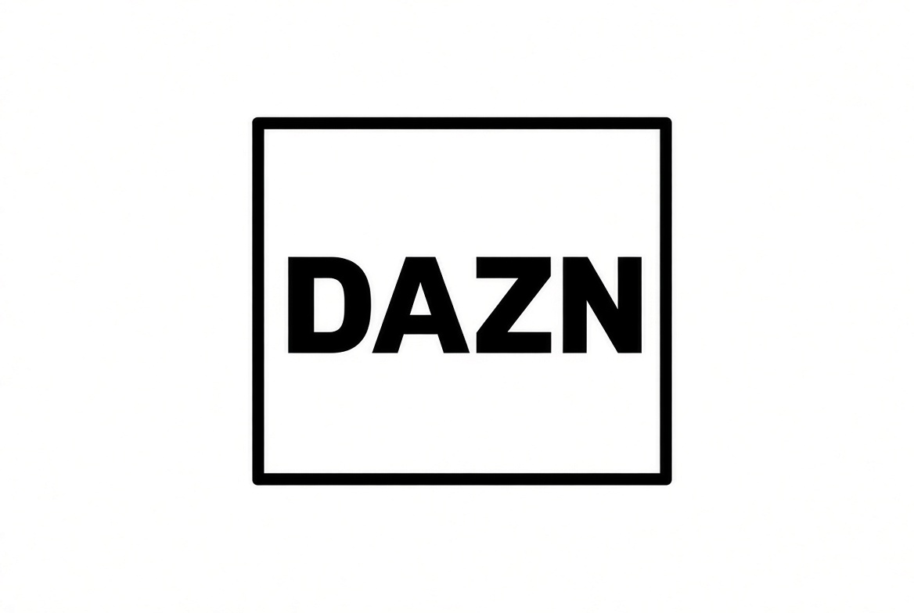
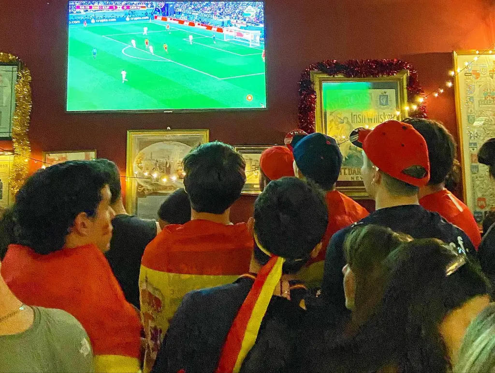

The best sports bars in Spain’s most visited cities to catch NFL games. Always confirm the fixture with the venue.
American football arrived in Spain in the 1960s through US military bases. The first professional team, the Barcelona Dragons, played in the World League / NFL Europe in the 1990s.
In 1993 and 1994 the NFL staged two American Bowl pre-season games at Barcelona’s Olympic Stadium (49ers vs Steelers, and Broncos vs Raiders). These were exhibition matches that helped introduce the sport to Spanish fans.
In November 2025 the NFL played its first official regular-season game in Spain: Miami Dolphins vs Washington Commanders at Real Madrid’s Santiago Bernabéu (78,610 spectators). The league has since signed a multi-year deal to return to Madrid.
Most NFL games are shown in the evening and late night in Spain (CET). Typical weekly schedule during the regular season:
International games in Europe (London, Paris, Madrid, Munich…) are usually played on Sunday afternoons local time, so they are much more convenient to watch in Spain (around 15:00–16:00 CET). Always confirm the exact kick-off and which bars are showing the game.
These are the main broadcasters with rights for the 2026/27 season:
Mediaset
Cuatro & Mediaset Infinity
More than 50 games free-to-air
(Sunday Night, internationals, Super Bowl…)

DAZN
5 weekly games + playoffs + Super Bowl
+ NFL Game Pass (all games)
Always check the weekly schedule as the exact games on each platform can change.





Classic Irish pub with multiple screens. They regularly show major sports including NFL. Good atmosphere and central location.
MapAnother solid Irish pub option for sports. NFL is shown for big games. Friendly crowd and multiple screens.
Map